Human and Pokemon. Because I'm utter trash
That's what Sunlocke is. It's also a Nuzlocke if that's up your alley.
This was an experience, that's for sure. I used a sunset tutorial that I would up enjoying, scrapped a few ideas, and wound up with this. Good times!
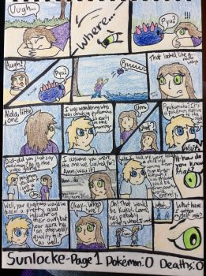Fun fact: When I was inking this, I had actually just got new inking pens, so I was experimenting with them. This is why my inking is so inconsistent in the first couple of pages... Okay it's always inconsistent actually.
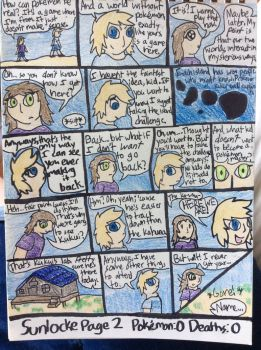Buildings will be the death of me, I swear. Thank goodness Alola hardly has any cities. I also decided to just go with the MYSTERIOUS STRANGER just disappearing as it suits him.
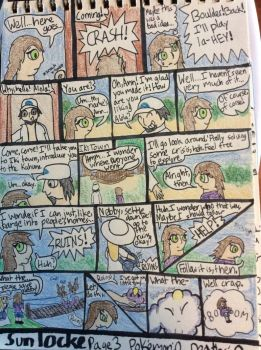Ow I hate this page. So, so much. It actually hurts, the amount of hate I feel towards it. Kukui is terrible, Ann isn't drawn well, and Nebby... well, Nebby is perfect. These days, I'd probably split it into two pages, but I don't feel like redrawing this any time soon.
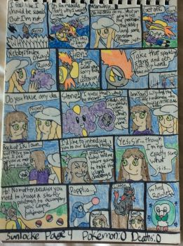Oh, phew, this page isn't terrible. I actually like the first two panels quite a bit. I stand by those.
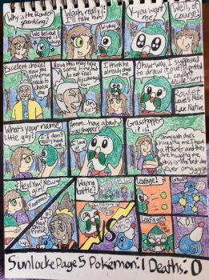And so, Grasshopper joins the team. I love this small bean.
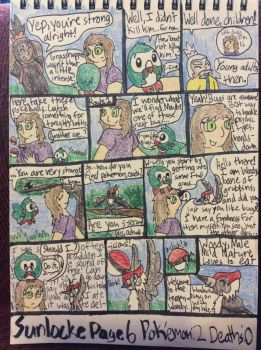I think this was the first page that I really enjoyed drawing. Before, they were kind just ehh as I waited to get to the good parts. I actually wrote an entire paragraph of Woody talking about bugs that's going on behind his character. Don't remember what it was about, though.
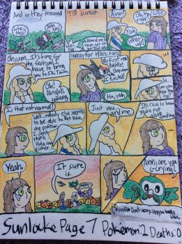 Second favorite page of Chapter 1! Oh man, I adore this page. Sunset, flowers, dumb Nebby joke... the whole Sunlocke package! It's what I'm about, really. 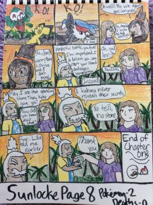And so ends Chapter 1! Probably going to be the shortest chapter because oh man this was rushed. I just really wanted it to be done, and I made a lot of beginner's mistakes. Luckily, the next chapter definitely fixes those mistakes, right?... Right?..
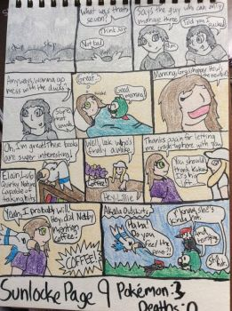Elain! Elain is super fun, but I keep catching birds. Why. Seriously, this felt like a Flying only locke for a while. And Woody considers sailing a ship before page 10! You go, bird.
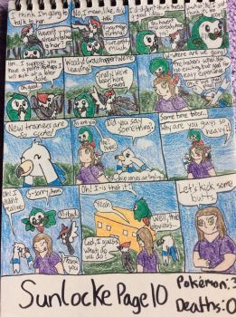Thankfully, Grasshopper convinces Woody to not. Good job, Grasshopper. His stuttering is also getting worse somehow. Huh.
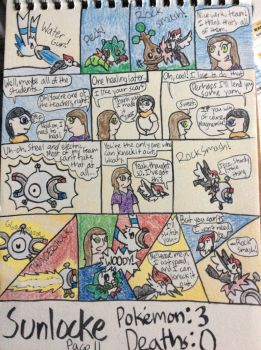The way Ann talks to Ms. Emily is also how I talk to teachers soemtimes. My teachers love me.
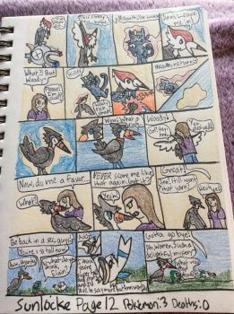